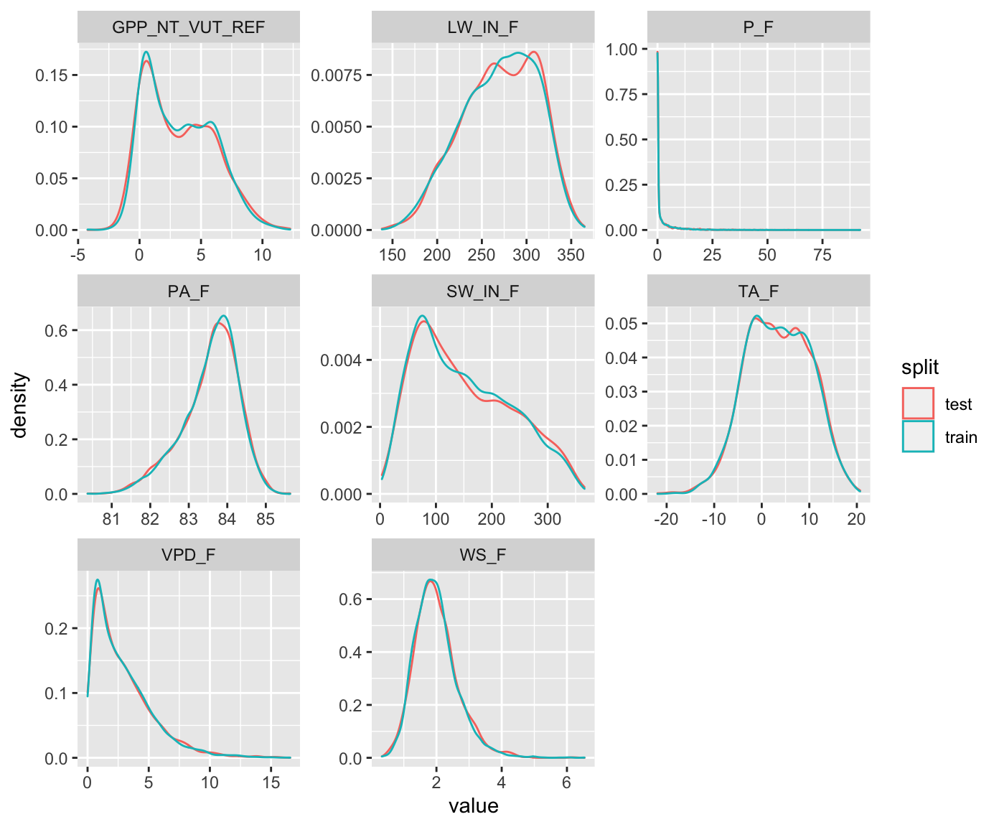

Chapter 3 Data splitting
3.1 Reading and wrangling data
Let’s start by reading our data and apply few processing steps (wrangling).
There is a difference between data wrangling and pre-processing as part of the modelling workflow, which we will learn about in Chapter 4. Data wrangling can be considered to encompass the steps to prepare the data set prior to modelling, including, combining variables from different sources, removal of bad or missing data, and aggregating to the desired resolution or granularity (e.g., averaging over all time steps in a day, or over all replicates in a sample). See the Quartz Guide to Bad Data for an overview of how to deal with different types of bad data.
In contrast, pre-processing refers to the additional steps that are either required by the ML algorithm (e.g. centering and scaling for KNN or neural networks) or the transformation of variables guided by the resulting improvement of the predictive power of the ML model. In other words, pre-processing is part of the modelling workflow and includes all steps that apply transformations that use parameters derived from the data.
We are provided with a data file in the format of comma-separated-values (CSV), obtained through FLUXNET2015. It contains data from one site (CH-Dav) at a daily time step, and includes quality control information for each variable.
Let’s read the data, select relevant variables, convert the time stamp column to a time object and interpret missing values (encoded -9999 in the file).
library(tidyverse)
ddf <- read_csv("./data/FLX_CH-Dav_FLUXNET2015_FULLSET_DD_1997-2014_1-3.csv") %>%
## select only the variables we are interested in
select(TIMESTAMP,
GPP_NT_VUT_REF, # the target
NEE_VUT_REF_QC, # quality control info
ends_with("_F"), # includes all all meteorological variables
-contains("JSB") # weird useless variable
) %>%
## convert to a nice date object
mutate(TIMESTAMP = lubridate::ymd(TIMESTAMP)) %>%
## set all -9999 to NA
na_if(-9999) %>%
## drop QC variables (no longer needed), except NEE_VUT_REF_QC
select(-ends_with("_QC"), NEE_VUT_REF_QC)If the style of the code above looks unfamiliar - this is the tidyverse. The tidyverse is a R syntax “dialect” and a collection of R functions and packages. They share the structure of arguments and function return values than can be combined to a chain by the %>% (“pipe”) operator. For this, the output of each function is a data frame which is “piped” to the next function, and each function takes a data frame as input. What is piped into a function takes the place of the first argument, normally provided in brackets. This enables ease with typical data wrangling and visualization tasks (ggplot2 is part of it). This tutorial is generally written using tidyverse packages and code syntax.
The column NEE_VUT_REF_QC provides information about the fraction of gap-filled half-hourly data used to calculate daily aggregates. Let’s remove GPP_NT_VUT_REF data, where more than 80% of the half-hourly data was gap-filled. Make sure to not actually remove the respective rows, but rather replace values with NA.
ddf <- ddf %>%
mutate(GPP_NT_VUT_REF = ifelse(NEE_VUT_REF_QC < 0.8, NA, GPP_NT_VUT_REF))At this stage, we won’t use NEE_VUT_REF_QC any longer. So we can drop it.
ddf <- ddf %>%
select(-NEE_VUT_REF_QC)3.2 Splitting into testing and training sets
The introductory example impressively demonstrated the importance of validating the fitted model with data that was not used for training. Thus, we can test the model’s generalisability. The essential step that enables us to assess the model’s generalization error is to hold out part of the data from training, and set it aside (leaving it absolutely untouched) for testing.
There is no fixed rule for how much data are to be used for training and testing, respectively. We have to balance the trade-off between:
- Spending too much data for training will leave us with too little data for testing and the test results may not be robust. In this case, the sample size for getting robust validation statistics is not sufficiently large and we don’t know for sure whether we are safe from an over-fit model.
- Spending too much data for validation will leave us with too little data for training. In this case, the ML algorithm may not be successful at finding real relationships due to insufficient amounts of training data.
Typical splits are between 60-80% for training. However, in cases where the number of data points is very large, the gains from having more training data are marginal, but come at the cost of adding to the already high computational burden of model training.
In environmental sciences, the number of predictors is often smaller than the sample size (\(p < n\)), because its typically easier to collect repeated observations of a particular variable than to expand the set of variables being observed. Nevertheless, in cases where the number \(p\) gets large, it is important, and for some algorithms mandatory, to maintain \(p < n\) for model training.
An important aspect to consider when splitting the data is to make sure that all “states” of the system for which we have data are approximately equally represented in training and testing sets. This is to make sure that the algorithm learns relationships \(f(X)\) also under rare conditions \(X\), for example meteorological extreme events.
Several alternative functions for the data splitting step are available from different packages in R. We will use the the rsample package as it allows to additionally make sure that data from the full range of a given variable’s values (VPD_F in the example below) are well covered in both training and testing sets.
library(rsample)
set.seed(123) # for reproducibility
split <- initial_split(ddf, prop = 0.7, strata = "VPD_F")
ddf_train <- training(split)
ddf_test <- testing(split)Plot the distribution of values in the training and testing sets.
ddf_train %>%
mutate(split = "train") %>%
bind_rows(ddf_test %>%
mutate(split = "test")) %>%
pivot_longer(cols = 2:9, names_to = "variable", values_to = "value") %>%
ggplot(aes(x = value, y = ..density.., color = split)) +
geom_density() +
facet_wrap(~variable, scales = "free")